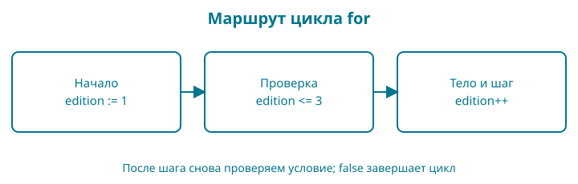

4. Какие издания можно показать
Книга может быть черновиком, а одно из старых изданий — снятым с продажи. Напишем небольшую проверку, которая обходит три номера изданий и сообщает, какие доступны.
Контрольная точка: examples/04-conditions. Это упражнение над состоянием каталога. Оно не удаляет купленные книги из библиотеки покупателя: правила доступа к уже приобретённому изданию будут отдельными.
Набираете сами: в отдельной папке главы сохраните свой go.mod и создайте main.go из полного листинга ниже. Это опыт с условиями; цену из главы 3 сохраняем в предыдущей папке, а не удаляем из истории проекта.
Образ: дверь и три карточки
На столе лежат три карточки изданий. Перед витриной — дверь с условием: «Показывать только опубликованное». Сначала проверяем, открыта ли дверь для нашей книги. Затем берём карточки по одной. Второе издание снято с продажи — откладываем его и берём следующее.
В программе if выбирает действие по условию, а for повторяет шаги. continue в нашем обходе означает: закончить работу с текущей карточкой и перейти к следующему шагу цикла. break означает другое: завершить этот цикл целиком. Представьте, что после второй карточки вы либо тянетесь за третьей, либо убираете всю стопку. Разницу теперь можно увидеть до запуска.
Дверь не является отдельным объектом программы: это рисунок выбора. Само условие должно дать логическое значение. Нарисуйте дверь и три маленьких прямоугольника. Зачеркните второй, но оставьте третий на витрине. Какой переход нужен для такого результата? Проверьте свой ответ на нашем цикле.
Сначала выбор без повторения
Условие отвечает на вопрос, а ветвление выбирает, какой блок выполнить. В главе 3 мы только последовательно меняли значения; теперь программа может пропустить часть команд. Условие if обязано иметь тип bool. Число 1 и непустая строка сами по себе не заменяют true.
У одной проверки могут быть две ветви: if для истинного условия и else для ложного. Цепочка else if задаёт следующий вопрос, только когда предыдущий дал ложь. Выполняется первый подходящий блок, а не все подходящие блоки подряд. Для независимых действий используют отдельные if.
Сравнения ==, !=, <, <=, > и >= дают логическое значение. = присваивает, поэтому quantity = 0 не является вопросом «количество равно нулю». Отрицание ! меняет истину на ложь и наоборот.
| A | B | A && B: оба истинны | A || B: хотя бы одно истинно |
|---|---|---|---|
| false | false | false | false |
| false | true | false | true |
| true | false | false | true |
| true | true | true | true |
&& не вычисляет правую часть, если левая ложна. || не вычисляет правую часть, если левая истинна. Это сокращённое вычисление: например, проверка ненулевого делителя должна стоять до деления, справа от &&. Скобки помогают показать нужную группировку; не меняйте порядок условий, если правой части нужна гарантия левой.
Один вариант из нескольких: switch
switch status сравнивает значение status с вариантами после case. При совпадении выполняется соответствующий блок. default — запасная ветвь, если совпадений нет. В нашем примере это неизвестное состояние. После обычного case Go сам выходит из переключателя: писать break в конце каждой ветви не нужно. Это отличается от выхода из цикла, который рассмотрим ниже.
Сначала используем именно эту форму переключателя значений. Переключатель типов интерфейса — другая конструкция; он появится только после объяснения интерфейсов. Редкая команда fallthrough здесь не нужна.
Полная маленькая программа, не изменяющая основной пример главы:
package main
import "fmt"
func main() {
published := true
quantity := 0
if !published {
fmt.Println("Черновик")
} else if quantity == 0 {
fmt.Println("Нет экземпляров")
} else {
fmt.Println("Можно выбрать")
}
fmt.Println(published && quantity > 0)
fmt.Println(published || quantity > 0)
status := "draft"
switch status {
case "draft":
fmt.Println("Готовится")
case "published":
fmt.Println("На витрине")
default:
fmt.Println("Неизвестное состояние")
}
}
Папки опытов устроены как в главе 3. Из корня контрольной точки запустите:
go run ./labs/01-choices
Нет экземпляров
false
true
Готовится
Здесь published истинно, но количество равно нулю. Поэтому выбран второй блок цепочки, выражение с И ложно, выражение с ИЛИ истинно. switch работает с отдельной строкой status, а не с результатом прежнего условия.
Проверьте без угадывания. Сделайте количество равным 2: первая строка изменится на Можно выбрать, следующие две будут true. Затем установите published = false: первой станет строка Черновик. Для switch задайте неизвестное состояние и получите Неизвестное состояние. Эти изменения проверяют разные решения, а не заменяют одно другим.
Где видна переменная
Переменная, объявленная внутри фигурных скобок ветви, недоступна после этой ветви. Если результат нужен после if, объявите его до ветвления и используйте внутри =. Новое := во вложенном блоке может создать другое имя и скрыть внешнюю переменную: внешнее значение тогда не изменится. Это называется затенением.
Не путайте область видимости с временем жизни данных. Здесь мы говорим только о том, в какой части исходника разрешено использовать имя. Возвращение адресов и замыкания разберём после функций и указателей.
Затем повторение без вложенных решений
Go использует одно ключевое слово for для нескольких форм цикла:
| Форма | Когда удобно |
|---|---|
for i := 1; i <= 3; i++ { ... } |
Есть счётчик, граница и регулярный шаг |
for remaining > 0 { ... } |
Действие повторяется, пока условие истинно |
for { ... } |
Условие выхода проверяется внутри; без выхода цикл не завершится сам |
Многоточие в этой таблице обозначает место тела, а не код для копирования. В полном листинге ниже его нет. Цикл for с условием проверяет его перед телом: возможны ноль проходов. Изменение счётчика должно приближать остановку. Запись remaining = remaining - 1 вычитает единицу и сохраняет результат в той же переменной. В форме с одним условием отдельного автоматического шага нет — в опыте remaining меняет само тело.
package main
import "fmt"
func main() {
for edition := 1; edition <= 3; edition++ {
fmt.Println("Издание", edition)
}
remaining := 2
for remaining > 0 {
fmt.Println("Осталось", remaining)
remaining = remaining - 1
}
number := 0
for {
number++
if number == 2 {
continue
}
if number == 4 {
break
}
fmt.Println("Выбрано", number)
}
}
go run ./labs/02-loops
Издание 1
Издание 2
Издание 3
Осталось 2
Осталось 1
Выбрано 1
Выбрано 3
Сначала выполняются три прохода первого цикла. Во втором после печати 1 значение становится нулём, следующая проверка ложна. В третьем увеличение стоит перед проверками: номер 2 пропускается через continue, номер 4 завершает цикл через break. Поэтому остаются строки с 1 и 3. Программа не содержит бесконечно работающего варианта.
Трассировка на бумаге. Для второго цикла запишите три проверки: 2 > 0, 1 > 0, 0 > 0. Последняя не запускает тело. Поменяйте начальное значение на 0 и предскажите, какие две строки исчезнут. Затем верните 2.
Проверка перед соединением. Напишите отдельно выбор «черновик / опубликована» и отдельно цикл, печатающий 1, 2, 3. Объясните, почему continue оставляет возможность следующего прохода, а break её прекращает. Только затем соединяйте эти действия в обходе изданий магазина.
Сразу целиком
package main
import "fmt"
func main() {
published := true
for edition := 1; edition <= 3; edition++ {
if !published {
fmt.Println("Книга готовится")
break
}
if edition == 2 {
fmt.Println("Издание", edition, "снято с продажи")
continue
}
fmt.Println("Доступно издание", edition)
}
}
Сначала отметьте на бумаге, какие строки сработают для номера 2. Затем запустите go run ..
Доступно издание 1
Издание 2 снято с продажи
Доступно издание 3
Число 2 не потерялось: у него другой результат. Мы явно сообщили, что издание снято с продажи.
Условие — вопрос с логическим ответом
if edition == 2 проверяет равенство. Если условие истинно, выполняется блок в фигурных скобках. Один знак = присваивает значение; два знака == сравнивают значения. Перепутать их легко, поэтому читайте выражение словами: «номер издания равен двум?».
!published означает «не опубликована». Знак ! меняет логическое значение на противоположное. Если книга ещё не опубликована, нет смысла показывать доступные издания этого учебного каталога.
Условия могут использовать <, <=, >, >= и !=. У равенства и сравнения тоже есть ограничения типов: не все значения языка сравниваются любым оператором. Сейчас мы работаем с целыми числами и логическим значением.
Цикл: начало, проверка, шаг
В заголовке for edition := 1; edition <= 3; edition++ три части.
Первая создаёт счётчик со значением 1 перед обходом. Вторая проверяется перед каждым выполнением тела: можно ли продолжать? Третья увеличивает счётчик на единицу после очередного завершённого прохода.
Получается последовательность: 1, 2, 3. Когда счётчик станет равен 4, условие 4 <= 3 окажется ложным, и цикл закончится. Переменная edition объявлена в заголовке цикла и недоступна после него. Это пример области видимости: имя существует не во всех местах файла.
edition++ — отдельная команда увеличения, а не выражение, которое надо вкладывать в печать. Здесь она управляет переходом к следующему изданию.
Два разных способа прекратить работу
continue завершает текущий проход цикла. В нашем случае при номере 2 строка «Доступно издание» пропускается. Для такого for затем выполняется шаг edition++, проверяется условие и начинается следующий проход.
break выходит из цикла целиком. Если изменить published на false, программа один раз напечатает Книга готовится и прекратит обход.
Представьте проверку полки.
continue— перейти к следующей книге на полке.break— прекратить проверку этой полки. Но в программе границу определяет именно цикл, а не любое место, которое кажется нам «следующей задачей».
Проверим границы
Измените edition <= 3 на edition < 3. Третье издание исчезнет из вывода. Это не сбой инструмента: условие больше не разрешает проход с номером 3.
Верните <=. Затем установите начальное значение 4. Тело не выполнится ни разу, потому что условие проверяется до первого прохода.
Наконец, верните исходник и попробуйте убрать edition++, сохранив обе точки с запятой. Счётчик перестанет меняться, и при опубликованной книге программа будет повторять сообщение. Остановите её Ctrl+C и восстановите шаг. Не оставляйте такой вариант работающим: пользы от повторного вывода нет.
Читаем условие и цикл по символам
| Запись | Роль |
|---|---|
for |
Начало цикла |
; в заголовке for |
Отделяет начало, условие и шаг |
<= |
Меньше или равно; два знака образуют один оператор |
++ |
Увеличить переменную на единицу; отдельная команда |
if |
Выполнить блок, если условие истинно |
! |
Логическое отрицание |
== |
Проверка равенства; это не присваивание |
break |
Закончить этот цикл |
continue |
Закончить текущий проход и перейти к следующему |
Фигурные скобки вложенных блоков закрываются в обратном порядке: сначала внутренний if, потом внешний for, потом main. Отступы помогают это видеть; если потерялись, временно подпишите закрывающие скобки в заметках. Круглые скобки вокруг условия if Go не требует.

Пройдите маршрут пальцем. Для номеров 1, 2 и 3 укажите, какие условия сработают и где заканчивается проход. Сначала без запуска, затем сравните с выводом.
Разминка
Предскажите. Сколько строк появится при published := false?
Заполните. Какой оператор оставляет номера до трёх включительно: < или <=?
Почините. У снятого издания удалили continue, и теперь оно одновременно «снято» и «доступно». Объясните, почему выполняются обе строки.
Задание
Обязательное. Обойдите номера от 1 до 4 включительно. Снятым должно быть издание 3. Ожидаемый вывод:
Доступно издание 1
Доступно издание 2
Издание 3 снято с продажи
Доступно издание 4
На своих данных. Выберите другой снятый номер внутри диапазона. Перед запуском перечислите ожидаемые строки.
По желанию. Снимите два издания с помощью двух отдельных условий. Затем используйте разобранный в этой главе оператор || и объедините проверку. Сравните читаемость.
Ответы
Для черновика будет одна строка. Включённая правая граница записывается через <=. Без continue программа после сообщения о снятии идёт дальше и печатает обычную строку этого же прохода.
В обязательном задании верхняя граница меняется на 4, а проверка снятого номера — на edition == 3. Начальное значение остаётся 1.
Мы научились повторять действие и выбирать его по данным. Теперь вынесем самостоятельное правило — расчёт скидки — в функцию и закрепим ожидаемое поведение тестами.